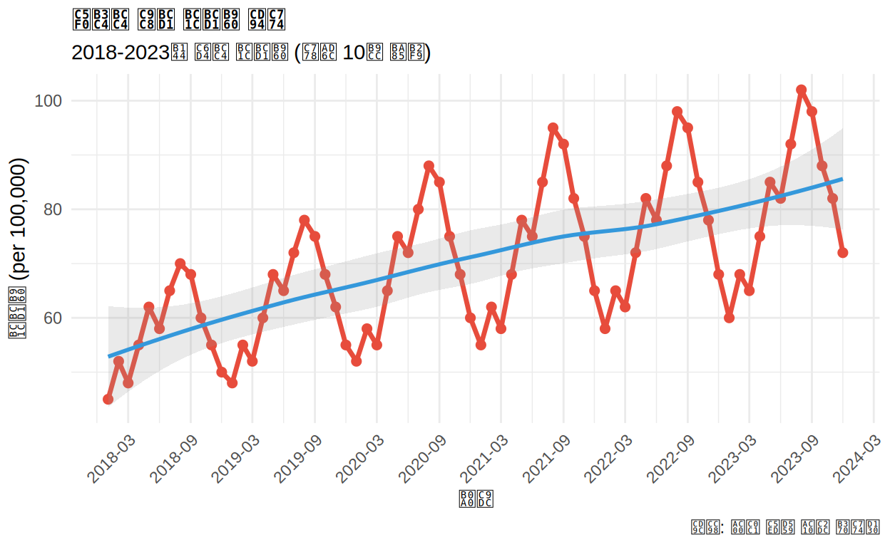
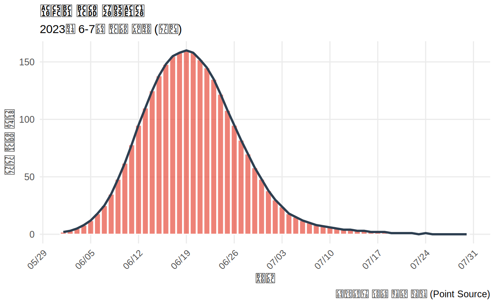
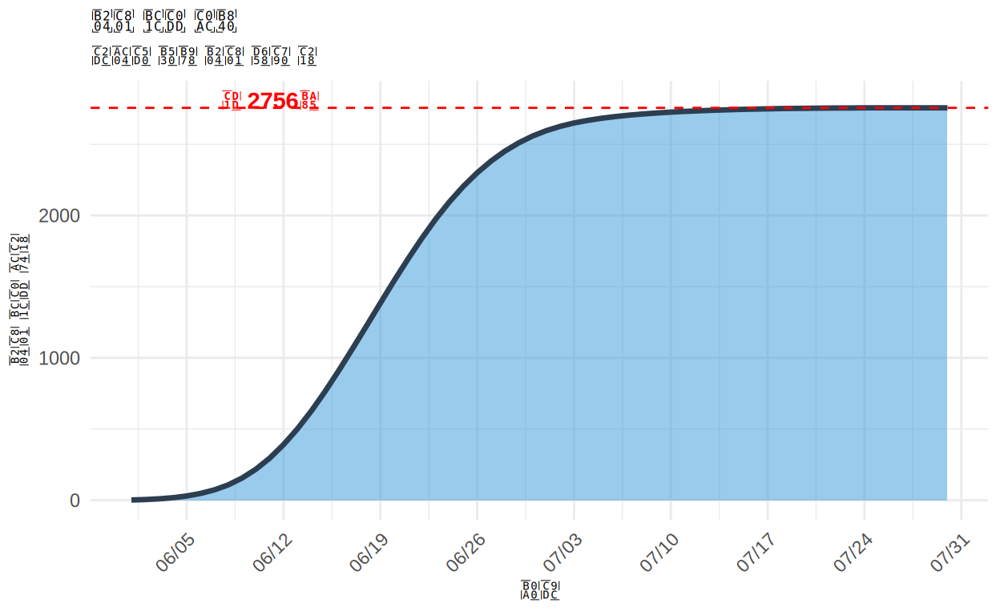
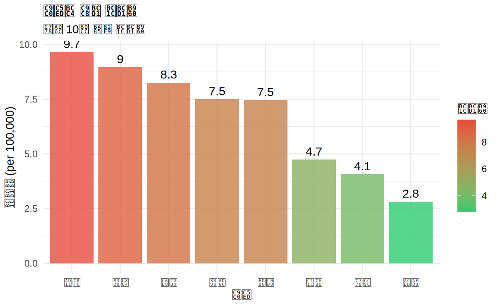
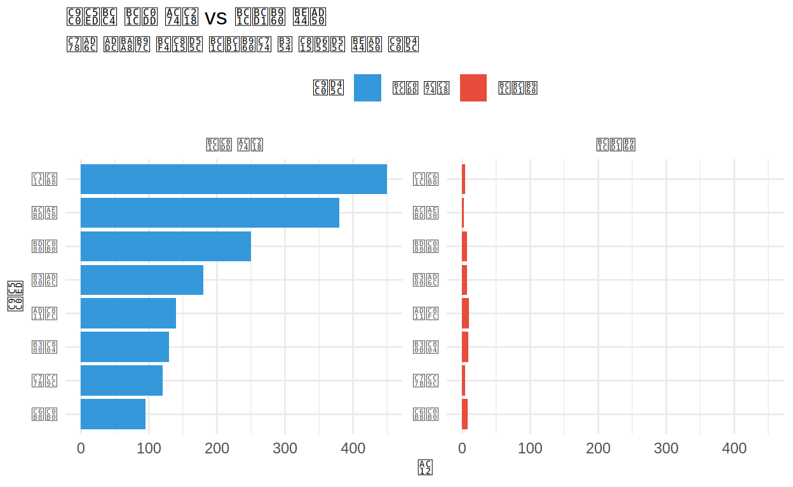

📈 역학 데이터 시각화에 오신 것을 환영합니다!
학습 목표:
- 발병률(Incidence Rate) 계산 및 시각화
- 유행곡선(Epidemic Curve) 제작
- 연령 표준화 비율 표현
- 시계열 역학 데이터 분석 및 시각화
- 지역별 질병 분포 비교
이 과정을 마치면:
✅ 역학 연구에 필수적인 그래프를 그릴 수 있습니다 ✅ 발병률과 유병률을 시각화할 수 있습니다 ✅ 질병 유행의 패턴을 분석할 수 있습니다 ✅ 논문 출판 수준의 역학 그래프를 제작할 수 있습니다
1장: 발병률 시각화 (Incidence Rate)
발병률이란?
발병률(Incidence Rate) = (특정 기간 동안 새로 발생한 환자 수 / 위험인구) × 100,000
역학에서 가장 중요한 지표 중 하나로, 질병의 새로운 발생을 측정합니다.
시계열 발병률 그래프
ggplot(disease_incidence, aes(x = date, y = incidence_rate)) +
geom_line(color = "#E74C3C", size = 1.2) +
geom_point(color = "#E74C3C", size = 2) +
geom_smooth(method = "loess", se = TRUE, alpha = 0.2, color = "#3498DB") +
labs(
title = "연도별 질병 발병률 추이",
subtitle = "2018-2023년 월별 발병률 (인구 10만 명당)",
x = "날짜",
y = "발병률 (per 100,000)",
caption = "출처: 가상 역학 감시 데이터"
) +
scale_x_date(date_breaks = "6 months", date_labels = "%Y-%m") +
theme_minimal() +
theme(
axis.text.x = element_text(angle = 45, hjust = 1),
plot.title = element_text(face = "bold", size = 14)
)## Warning: Using `size` aesthetic for lines was deprecated in ggplot2 3.4.0.
## ℹ Please use `linewidth` instead.
## This warning is displayed once every 8 hours.
## Call `lifecycle::last_lifecycle_warnings()` to see where this warning was
## generated.## `geom_smooth()` using formula = 'y ~ x'
해석: 2018년부터 2023년까지 발병률이 점진적으로 증가하는 추세를 보입니다!
연습: 발병 건수 시각화
# disease_incidence 데이터로 연도별 평균 발병 건수 막대 그래프
disease_incidence %>%
group_by(year) %>%
summarise(avg_cases = mean(___)) %>%
ggplot(aes(x = factor(year), y = avg_cases)) +
geom_col(fill = "#3498DB")disease_incidence %>%
group_by(year) %>%
summarise(avg_cases = mean(cases)) %>%
ggplot(aes(x = factor(year), y = avg_cases)) +
geom_col(fill = "#3498DB", alpha = 0.8) +
geom_text(aes(label = round(avg_cases, 1)), vjust = -0.5, size = 4) +
labs(
title = "연도별 평균 월간 발병 건수",
x = "연도",
y = "평균 발병 건수",
caption = "데이터: 월별 평균 집계"
) +
theme_minimal() +
theme(plot.title = element_text(face = "bold"))2장: 유행곡선 (Epidemic Curve)
유행곡선이란?
유행곡선(Epidemic Curve) 은 질병 발생의 시간적 분포를 보여주는 히스토그램입니다. 발병 시점의 패턴을 통해 전파 방식을 추론할 수 있습니다.
일별 유행곡선
ggplot(outbreak_data, aes(x = date, y = cases)) +
geom_col(fill = "#E74C3C", alpha = 0.7, color = "white") +
geom_line(aes(y = cases), color = "#2C3E50", size = 1, group = 1) +
labs(
title = "감염병 발생 유행곡선",
subtitle = "2023년 6-7월 발생 사례 (일별)",
x = "날짜",
y = "일일 발생 건수",
caption = "전형적인 점원 노출 패턴 (Point Source)"
) +
scale_x_date(date_breaks = "1 week", date_labels = "%m/%d") +
theme_minimal() +
theme(
axis.text.x = element_text(angle = 45, hjust = 1),
plot.title = element_text(face = "bold", size = 14),
panel.grid.minor = element_blank()
)
해석: 약 3주차에 정점을 보이고 급격히 감소하는 전형적인 단일 노출 유행 패턴입니다!
누적 발생 곡선
ggplot(outbreak_data, aes(x = date)) +
geom_area(aes(y = cumulative), fill = "#3498DB", alpha = 0.5) +
geom_line(aes(y = cumulative), color = "#2C3E50", size = 1.2) +
geom_hline(yintercept = max(outbreak_data$cumulative),
linetype = "dashed", color = "red") +
annotate("text", x = min(outbreak_data$date) + 10,
y = max(outbreak_data$cumulative) + 50,
label = paste0("총 ", max(outbreak_data$cumulative), "명"),
color = "red", fontface = "bold") +
labs(
title = "누적 발생 사례",
subtitle = "시간에 따른 누적 환자 수",
x = "날짜",
y = "누적 발생 건수"
) +
scale_x_date(date_breaks = "1 week", date_labels = "%m/%d") +
theme_minimal() +
theme(axis.text.x = element_text(angle = 45, hjust = 1))
연습: 주간 집계 유행곡선
# outbreak_data를 주별로 집계하여 유행곡선 그리기
outbreak_weekly <- outbreak_data %>%
group_by(___) %>%
summarise(weekly_cases = sum(___))
ggplot(outbreak_weekly, aes(x = week, y = weekly_cases)) +
geom_col()outbreak_weekly <- outbreak_data %>%
group_by(week) %>%
summarise(weekly_cases = sum(cases))
ggplot(outbreak_weekly, aes(x = week, y = weekly_cases)) +
geom_col(fill = "#E74C3C", alpha = 0.7) +
geom_text(aes(label = weekly_cases), vjust = -0.5, size = 3) +
labs(
title = "주간 발생 사례",
subtitle = "주별 집계 유행곡선",
x = "주차",
y = "주간 발생 건수"
) +
theme_minimal() +
theme(panel.grid.minor = element_blank())3장: 연령별 발병률 비교
연령군별 발병률
역학에서 연령은 가장 중요한 위험 요인입니다. 연령별 발병률을 시각화하여 고위험군을 파악할 수 있습니다.
ggplot(age_specific_data, aes(x = age_group, y = rate_per_100k, fill = region)) +
geom_col(position = "dodge", alpha = 0.8) +
geom_text(aes(label = round(rate_per_100k, 0)),
position = position_dodge(width = 0.9),
vjust = -0.5, size = 3) +
scale_fill_manual(values = c("도시" = "#3498DB", "농촌" = "#E74C3C")) +
labs(
title = "지역별 연령군 특이 발병률",
subtitle = "도시 vs 농촌 비교 (인구 10만 명당)",
x = "연령군",
y = "발병률 (per 100,000)",
fill = "지역"
) +
theme_minimal() +
theme(
axis.text.x = element_text(angle = 0),
legend.position = "top",
plot.title = element_text(face = "bold")
)
해석: 연령이 증가할수록 발병률이 높아지며, 도시가 농촌보다 전반적으로 높습니다!
연습: 선 그래프로 비교
# 연령별 발병률을 선 그래프로 표현
ggplot(age_specific_data, aes(x = age_group, y = rate_per_100k,
color = region, group = region)) +
geom_line() +
geom_point()ggplot(age_specific_data, aes(x = age_group, y = rate_per_100k,
color = region, group = region)) +
geom_line(size = 1.2) +
geom_point(size = 3) +
scale_color_manual(values = c("도시" = "#3498DB", "농촌" = "#E74C3C")) +
labs(
title = "연령군별 발병률 추이",
subtitle = "지역 간 비교",
x = "연령군",
y = "발병률 (per 100,000)",
color = "지역"
) +
theme_minimal() +
theme(legend.position = "top")4장: 지역별 질병 분포
지역별 발병률 비교
ggplot(regional_data, aes(x = reorder(region, -incidence_rate),
y = incidence_rate)) +
geom_col(aes(fill = incidence_rate), alpha = 0.8) +
geom_text(aes(label = round(incidence_rate, 1)), vjust = -0.5, size = 4) +
scale_fill_gradient(low = "#2ECC71", high = "#E74C3C") +
labs(
title = "지역별 질병 발병률",
subtitle = "인구 10만 명당 발병률",
x = "지역",
y = "발병률 (per 100,000)",
fill = "발병률"
) +
theme_minimal() +
theme(
axis.text.x = element_text(angle = 0),
legend.position = "right",
plot.title = element_text(face = "bold", size = 14)
)
발생 건수 vs 발병률 비교
library(tidyr)
regional_long <- regional_data %>%
select(region, cases, incidence_rate) %>%
pivot_longer(cols = c(cases, incidence_rate),
names_to = "measure",
values_to = "value")
ggplot(regional_long, aes(x = reorder(region, value), y = value, fill = measure)) +
geom_col() +
facet_wrap(~ measure, scales = "free_y",
labeller = labeller(measure = c(cases = "발생 건수",
incidence_rate = "발병률"))) +
coord_flip() +
scale_fill_manual(values = c("cases" = "#3498DB", "incidence_rate" = "#E74C3C"),
labels = c("발생 건수", "발병률")) +
labs(
title = "지역별 발생 건수 vs 발병률 비교",
subtitle = "인구 규모를 보정한 발병률이 더 정확한 비교 지표",
x = "지역",
y = "값",
fill = "지표"
) +
theme_minimal() +
theme(legend.position = "top")
중요: 인구가 많은 지역이 발생 건수는 많지만, 발병률로 보정하면 다른 패턴을 보입니다!
5장: 종합 퀴즈 📝
역학 개념 퀴즈
시각화 기법 퀴즈
데이터 해석 퀴즈
6장: 심화 퀴즈 🧠
코드 결과 예측 퀴즈
오류 찾기 퀴즈
빈칸 채우기 퀴즈
역학 개념 심화 퀴즈
7장: 종합 실습 🚀
최종 과제: 역학 보고서 그래프 제작
시나리오: 여러분은 질병관리본부의 역학조사관입니다. 새로운 감염병 발생 데이터를 분석하여 보고서를 작성해야 합니다.
과제 1: 시계열 분석
disease_incidence 데이터로 2022-2023년 발병률 추이를 분석하세요.
# 2022-2023년 데이터 필터링 후 시각화
recent_data <- disease_incidence %>%
filter(year >= ___)
ggplot(recent_data, aes(x = ___, y = ___)) +
geom_line() +
geom_point()recent_data <- disease_incidence %>%
filter(year >= 2022)
ggplot(recent_data, aes(x = date, y = incidence_rate)) +
geom_line(color = "#E74C3C", size = 1.2) +
geom_point(color = "#E74C3C", size = 2.5) +
geom_smooth(method = "loess", se = TRUE, alpha = 0.2) +
labs(
title = "최근 2년간 질병 발병률 추이",
subtitle = "2022-2023년 월별 발병률 (인구 10만 명당)",
x = "날짜",
y = "발병률 (per 100,000)",
caption = "데이터: 질병관리본부"
) +
scale_x_date(date_breaks = "2 months", date_labels = "%Y-%m") +
theme_minimal() +
theme(
axis.text.x = element_text(angle = 45, hjust = 1),
plot.title = element_text(face = "bold", size = 14),
panel.grid.minor = element_blank()
)과제 2: 발생 vs 발병률 비교 패널
regional_data로 발생 건수와 발병률을 facet으로 나누어 비교하세요.
# 데이터 변환 및 facet 그래프
regional_long <- regional_data %>%
select(region, cases, incidence_rate) %>%
pivot_longer(cols = c(___, ___),
names_to = "measure",
values_to = "value")
ggplot(regional_long, aes(x = reorder(region, value), y = value)) +
geom_col()regional_long <- regional_data %>%
select(region, cases, incidence_rate) %>%
pivot_longer(cols = c(cases, incidence_rate),
names_to = "measure",
values_to = "value")
ggplot(regional_long, aes(x = reorder(region, value), y = value, fill = measure)) +
geom_col(alpha = 0.8) +
geom_text(aes(label = round(value, 1)), hjust = -0.2, size = 3) +
facet_wrap(~ measure, scales = "free_x",
labeller = labeller(measure = c(
cases = "발생 건수",
incidence_rate = "발병률 (per 100,000)"
))) +
coord_flip() +
scale_fill_manual(values = c("cases" = "#3498DB", "incidence_rate" = "#E74C3C"),
labels = c("발생 건수", "발병률")) +
labs(
title = "지역별 질병 부담 비교",
subtitle = "절대 건수 vs 인구 보정 발병률",
x = "지역",
y = "값",
fill = "지표",
caption = "인구 보정 발병률로 공정한 비교 가능"
) +
theme_minimal() +
theme(
legend.position = "top",
plot.title = element_text(face = "bold", size = 14),
strip.text = element_text(face = "bold", size = 11)
)과제 3: 연령-지역 이중 비교
age_specific_data로 연령과 지역을 모두 고려한 발병률 히트맵을 만드세요.
# 히트맵 스타일 그래프
ggplot(age_specific_data, aes(x = age_group, y = region, fill = rate_per_100k)) +
geom_tile()ggplot(age_specific_data, aes(x = age_group, y = region, fill = rate_per_100k)) +
geom_tile(color = "white", size = 1) +
geom_text(aes(label = round(rate_per_100k, 0)),
color = "white", fontface = "bold", size = 5) +
scale_fill_gradient(low = "#3498DB", high = "#E74C3C") +
labs(
title = "연령-지역별 발병률 히트맵",
subtitle = "인구 10만 명당 발병률",
x = "연령군",
y = "지역",
fill = "발병률"
) +
theme_minimal() +
theme(
plot.title = element_text(face = "bold", size = 14),
axis.text.x = element_text(angle = 45, hjust = 1),
panel.grid = element_blank()
)수고하셨습니다! 🎉
배운 내용 요약:
📊 역학 지표
- 발병률 (Incidence Rate): 새로운 환자 발생률
- 인구 10만 명당 표준화: 지역 간 공정한 비교
- 연령군 특이 발병률: 연령별 위험도 평가
- 누적 발생: 유행의 전체 규모 파악
📈 역학 그래프
- 유행곡선: 발병 시점의 시간적 분포
- 시계열 그래프: 장기 추세 분석
- 지역별 비교: 공간적 분포 파악
- 연령 피라미드: 연령별 위험도 시각화
🎨 시각화 기법
- geom_col() - 유행곡선
- geom_line() + geom_smooth() - 시계열 분석
- facet_wrap() - 다중 지역/시기 비교
- scale_fill_gradient() - 발병률 그라데이션
- geom_tile() - 히트맵
🔍 역학적 해석
- 점원 노출 vs 지속 노출 패턴 구분
- 계절성 패턴 인식
- 인구 보정의 중요성
- 고위험군 식별
다음 학습 단계:
✅ Part III: 임상통계편 - 생존 분석, 메타 분석, 임상시험 그래프
✅ Part IV: 고급편 - 공간 데이터 (지도), Shiny 대시보드
추천 학습 자료:
📖 Epi R Handbook: https://epirhandbook.com/ 📖 CDC Field Epidemiology Manual: https://www.cdc.gov/ 📖 WHO Outbreak Toolkit: https://www.who.int/
🏆 학습 결과 확인
📊 Part II: 역학 데이터 시각화
<p style="margin: 0; font-size: 0.9em;">정답 수</p>
<p style="margin: 5px 0 0 0; font-size: 2em; font-weight: bold;" id="correct-count">0</p><p style="margin: 0; font-size: 0.9em;">총 퀴즈</p>
<p style="margin: 5px 0 0 0; font-size: 2em; font-weight: bold;" id="total-count">0</p><p style="margin: 0; font-size: 0.9em;">점수</p>
<p style="margin: 5px 0 0 0; font-size: 2em; font-weight: bold;" id="score-percent">0%</p>※ 퀴즈를 풀면 자동으로 점수가 업데이트됩니다
축하합니다! Part II 역학편을 완료하셨습니다! 🎊